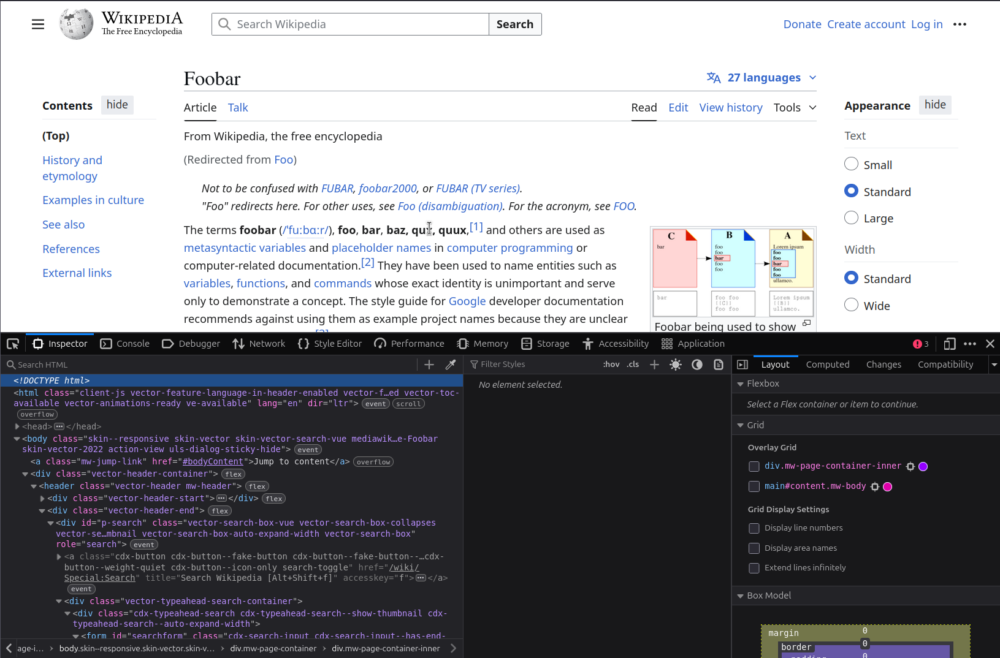

Webscraping – Part 1
Static webscraping
Before we start
This course:
- 3 parts: webscraping (parts 1 and 2), and handling large data with R and Python
- No assignments, only check for attendance
- All slides:
Plan for today
- Introduction:
- Using APIs and webscraping
- How is a webpage built?
- Q&A number 1
- Hands-on practice: scraping El Pais for electoral results
- Scraping one page
- Being polite
- Scraping hundreds of pages
- Q&A number 2
Introduction
What is webscraping?
It is the action of collecting data from webpages.
Anything that is visible on a webpage can be webscraped.
Why is it useful?
To get original data that isn’t available anywhere else.
Introduction
But webscraping can be time-consuming and isn’t always possible.
Order of preference:
- online service has an API (next slide)
- ask the online service
- scrape
- static pages (today)
- dynamic pages (tomorrow)
Using an API
The objective of some websites is to provide data to people: they want us to being able to access this data easily.
They usually provide an API (Application Programming Interface) so that we can interact with their services via code.
This is better than webscraping.
Using an API
Example: World Development Indicators API
In R, we can use the package WDI to access this API:
Using an API
Many data services have an API: World Bank, Eurostat, Google Maps, ArcGIS, US Census, etc.
Sometimes, those services require an API key (might need to pay for this).
If you want data from a source, try searching “R package API <name of the service>” first.
Objectives
For this morning, the objectives are to:
- understand the content of a webpage
- scrape a webpage
- be able to apply this to thousands of pages
- process the scraped content
What does a webpage contain?
What does a webpage contain?
The web works with 3 languages:
- HTML: content and structure of the page
- CSS: style of the page
- JavaScript: interactions with the page
HTML
HTML tells us the content of the page and how it is structured using tags.
Example: <p>Hello my name is <b>Etienne</b></p>
<p> is a paragraph tag and <b> is a bold tag.
HTML
Popular tags:
h1-h4: headersp: paragrapha: linkdiv: generic container
HTML
A tag can have attributes, e.g. class or style:
<p class = "my_class">Hello my name is <b>Etienne</b></p>
This is used either for custom styling with CSS or for interactions with JavaScript.
HTML
How can we see the HTML of a page?
Either:
- right-click on a page and “Inspect”
- Ctrl (or Cmd) + Shift + C
HTML

CSS
CSS is a language only about the style of the page.
There is no content at all, e.g. it’s only here to say “bold text should be in red and underlined”.
Example:
b {
color: red;
border-bottom: 1px dashed;
}CSS
It is still useful to know CSS paths because we’ll use them to select specific elements in the page.
p : all "p" tags
p span : all "span" contained in "p" tags
p, a : all "p" and "a" tags
#id1 : all elements with id equal to id1
.class1 : all elements of class "class1"
p.class1 : all "p" elements of class "class1"
p.class1 span : all "span" in "p" tags of class "class1"
p > span : all "span" that are direct children of p
h1 + p : all "p" that follow *directly* an "h1" (direct sibling)
h1 ~ p : all "p" that follow an "h1" (siblings placed after)
[id] : all elements with an existing "id" attribute
[class^=my] : all elements whose class starts with "my"
p[class*=low] : all "p" elements whose class contains the string lowExample
<h2>Who am I?</h2>
<div class="intro">
<p>I'm <span class="age">34</span> and
measure <span class="unit">1.70m</span>.</p>
</div>
<div class="info">
<div>
<p id="like">What I like:</p>
<ul>
<li>Barcelona</li>
<li>winning the Ballon d'Or every odd year</li>
</ul>
<p class="extra">I forgot to say that I like scoring over 100
goals per season.</p>
</div>
</div>Example
CSS selector for this paragraph?
p.extra
<h2>Who am I?</h2>
<div class="intro">
<p>I'm <span class="age">34</span> and
measure <span class="unit">1.70m</span>.</p>
</div>
<div class="info">
<div>
<p id="like">What I like:</p>
<ul>
<li>Barcelona</li>
<li>winning the Ballon d'Or every odd year</li>
</ul>
<p class="extra">I forgot to say that I like scoring over 100
goals per season.</p>
</div>
</div>Example
CSS selector for this div?
div.info > div
<h2>Who am I?</h2>
<div class="intro">
<p>I'm <span class="age">34</span> and
measure <span class="unit">1.70m</span>.</p>
</div>
<div class="info">
<div>
<p id="like">What I like:</p>
<ul>
<li>Barcelona</li>
<li>winning the Ballon d'Or every odd year</li>
</ul>
<p class="extra">I forgot to say that I like scoring over 100
goals per season.</p>
</div>
</div>JavaScript
JavaScript (JS) is a language that takes care of all the interactions with the page:
- add a popup when we scroll on the page
- show a notification when a button is pressed
- etc.
It makes it more difficult to scrape, we’ll handle that in part 2 tomorrow.
Today, we only look at HTML and CSS and focus on static webpages.
Static webpage:
- all the information is loaded with the page;
- changing a parameter modifies the URL
Dynamic webpage: the website uses JavaScript to fetch data from their server and dynamically update the page.
Example: Premier League stats.
Q&A number 1
Case study: electoral results in Spain
Case study: electoral results in Spain
Get results of municipal elections in Spain for 2019 from El Pais.
Turns out that since I’ve done this webscraping, an R package became available: infoelectoral.
Let’s pretend there isn’t any.
Case study: electoral results in Spain
My process for webscraping is always the same:
- focus on a single page
- extract data for this page
- generalize to other pages
- add error handling and logging
Importantly, separate webscraping from data processing (we’ll see why later).
Let’s start with the results in Bacares in 2019.
Case study: electoral results in Spain
In R, the main package for webscraping is rvest.
We can read HTML with read_html() and then select specific HTML elements with html_element() or html_elements() (this is where our CSS knowledge is useful).
Case study: electoral results in Spain
Part 1 in R
Being polite
Three rules to follow for polite webscraping:
- seeking permission
- taking slowly
- never asking twice
There’s an R package for thatTM: polite.
Being polite
Instead of:
we do:
Being polite
By default we use a 5-second delay or what the website recommends.
If we want to lower this, we need to specify our own “User-Agent”, which is sort of our ID card on the web.
Case study: electoral results in Spain
Now we have the table for one municipality: how can we generalize that (politely)?
The URL is:
https://resultados.elpais.com/elecciones/2019/municipales/01/04/19.htmlThree components:
- 01 is the comunidad code (for El Pais)
- 04 is the province code
- 19 is the municipality code
Case study: electoral results in Spain
To generalize the code, we need to loop through all of those combinations:
- for each comunidad:
- get the list of provinces
- for each province:
- get the list of municipalities
- for each municipality:
- get the data
new objective: gather all those combinations from the website
Case study: electoral results in Spain
Part 2 in R
Case study: electoral results in Spain
Great, let’s run everything!
Not so fast
Error handling
Catching errors
The default behavior of errors is to stop the script, which leads to this kind of situation:
- 7pm - “great, I can just run the code during the night and go home”
- 7:02pm - error in the code
- 8am - “Fu@$?!”
need to handle errors with tryCatch()
Catching errors
tryCatch :
try to run an expression
catch the potential warnings/errors
Catching errors
Example: try to compute log("a").
What if I want to return NA instead of an error?
Catching errors
Catching errors
Catching errors
tryCatch(
# try to evaluate the expression
{
log("a")
},
# what happens if there's a warning?
warning = function(w) {
print("There was a warning. Here's the message:")
print(w)
},
# what happens if there's an error?
error = function(e) {
print("There was an error. Returning `NA`.")
return(NA)
}
)[1] "There was an error. Returning `NA`."[1] NAExample with a loop
Create a fake loop that goes from i = 1:10 and creates a list containing i*2. Let’s say that there’s an error when i = 3:
Example with a loop
Create a fake loop that goes from i = 1:10 and creates a list containing i*2. Let’s say that there’s an error when i = 3:
Example with a loop
We don’t have values for i >= 3 because there was an error that stopped the loop.
Catching the error
Now, let’s catch the error to avoid breaking the loop:
Catching the error
[1] "i = 1. So far so good."
[1] "i = 2. So far so good."
[1] "Error for i = 3. `x[[3]]` will be NULL."
[1] "i = 3. So far so good."
[1] "i = 4. So far so good."
[1] "i = 5. So far so good."
[1] "i = 6. So far so good."
[1] "i = 7. So far so good."
[1] "i = 8. So far so good."
[1] "i = 9. So far so good."
[1] "i = 10. So far so good."[[1]]
[1] 2
[[2]]
[1] 4
[[3]]
NULL
[[4]]
[1] 8
[[5]]
[1] 10
[[6]]
[1] 12
[[7]]
[1] 14
[[8]]
[1] 16
[[9]]
[1] 18
[[10]]
[1] 20Using tryCatch in our loop
Part 3 in R
Processing the data
Note that until now, we have only gathered the data, not processed it.
Maybe we even did too much work!
We could have simply downloaded each HTML page locally: remember that a webpage is just a text file!
Processing the data
Advantages of downloading locally:
- we reduce the time where we need an internet connection, therefore reducing several risks of failure
- we improve the reproducibility of the dataset
Cons:
- depending on the number of pages and their size, it can take some storage space (but only if you really download tens or hundreds of thousands)
Ethics
Pay attention to a website’s Terms of Use/Service.
Some websites explicitly say that you are not allowed to programmatically access their resources.

Legality
I’m not a lawyer.
For me, scraping politely (slowly, identifying yourself) on websites where data is publicly available is fine.
Scraping data behind a paywall or needing an account is not, because the data is not publicly available.
Can get banned temporarily or permanently from some websites.
Conclusion
Sometimes, scraping static websites is needed (but check for available APIs first!).
The package rvest is the best tool to do that in R. If you prefer Python, use beautifulsoup.
Conclusion
Code on GitHub (not available yet): https://github.com/etiennebacher/innsbruck_teaching_may_2025
Acknowledgements: some of those slides were adapted from Laurent Bergé’s slides.
Session information
─ Session info ───────────────────────────────────────────────────────────────
setting value
version R version 4.4.2 (2024-10-31 ucrt)
os Windows 10 x64 (build 19045)
system x86_64, mingw32
ui RTerm
language (EN)
collate English_United States.utf8
ctype English_United States.utf8
tz Europe/Paris
date 2025-05-12
pandoc 3.2 @ C:/Program Files/RStudio/resources/app/bin/quarto/bin/tools/ (via rmarkdown)
quarto NA @ C:\\Users\\etienne\\AppData\\Local\\Programs\\Quarto\\bin\\quarto.exe
─ Packages ───────────────────────────────────────────────────────────────────
package * version date (UTC) lib source
cli 3.6.5 2025-04-23 [1] CRAN (R 4.4.3)
digest 0.6.37 2024-08-19 [1] CRAN (R 4.4.3)
evaluate 1.0.3 2025-01-10 [1] CRAN (R 4.4.3)
fastmap 1.2.0 2024-05-15 [1] CRAN (R 4.4.3)
htmltools 0.5.8.1 2024-04-04 [1] CRAN (R 4.4.3)
jsonlite 2.0.0 2025-03-27 [1] CRAN (R 4.4.3)
knitr 1.50 2025-03-16 [1] CRAN (R 4.4.3)
rlang 1.1.6 2025-04-11 [1] CRAN (R 4.4.3)
rmarkdown 2.29 2024-11-04 [1] CRAN (R 4.4.3)
rstudioapi 0.17.1 2024-10-22 [1] CRAN (R 4.4.3)
sessioninfo 1.2.3 2025-02-05 [1] CRAN (R 4.4.3)
xfun 0.52 2025-04-02 [1] CRAN (R 4.4.3)
yaml 2.3.10 2024-07-26 [1] CRAN (R 4.4.3)
[1] C:/Users/etienne/AppData/Local/R/win-library/4.4
[2] C:/Program Files/R/R-4.4.2/library
──────────────────────────────────────────────────────────────────────────────